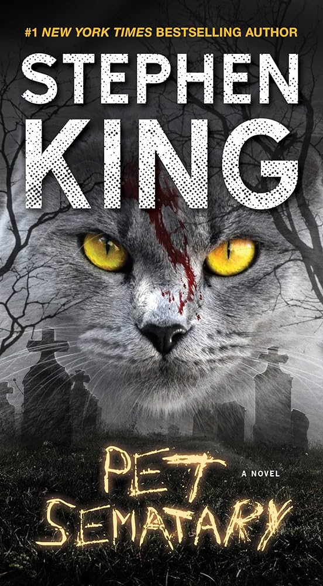

Electronics
Phone
Product decription:
High-Resolution Display: Immerse yourself in vibrant visuals on the 6.5-inch Super AMOLED display. Every image and video comes to life with stunning clarity and vivid colors.
Powerful Performance: Equipped with a lightning-fast octa-core processor and 8GB of RAM, the TechMaster Pro X1 ensures seamless multitasking and lag-free performance, even with the most demanding apps and games.
Advanced Camera System: Capture moments like a pro with the 64MP main camera. From stunning landscapes to detailed close-ups, every shot is a masterpiece. The 32MP front camera guarantees Instagram-worthy selfies.
All-Day Battery Life: Stay connected from sunrise to sunset with the long-lasting 4500mAh battery. Stream videos, browse the web, and chat with friends without constantly worrying about charging.
Price: 900TND
headphones

Product decription:
Immerse yourself in the world of music with our SonicSurge Wireless Over-Ear Headphones. These headphones are engineered to deliver an exceptional audio experience, combining high-quality sound, comfort, and versatility. Whether you're a music enthusiast, a gamer, or simply seeking a peaceful escape, the SonicSurge headphones have got you covered.
Hi-Fi Sound Quality: Experience crystal-clear sound with deep bass and crisp highs. Our advanced audio technology ensures that you hear every note and beat with precision.
Wireless Freedom: Say goodbye to tangled wires. Connect effortlessly to your device via Bluetooth and enjoy music without restrictions. The long-range connectivity ensures uninterrupted playback.
Active Noise Cancellation: Block out the world and focus on what matters. The built-in ANC technology reduces external noise, allowing you to fully immerse yourself in your music or games.
Price: 120TND
Clothing
Shirt

Product decription:
Wrinkle-Resistant: Say goodbye to ironing hassles. The fabric resists wrinkles, ensuring you look sharp even on the busiest of days.
Easy Care: Simply toss it in the washing machine for quick and hassle-free cleaning. It maintains its color and shape even after numerous washes.
Breathable Fabric: The cotton material allows your skin to breathe, keeping you cool and comfortable, even on warm days.
Price: 20TND
Pants

Product decription:
Premium Material: Made from a premium blend of cotton and elastane, these pants offer a comfortable, breathable, and stretchable fabric that moves with you throughout the day.
Easy Care: Machine washable for your convenience, these pants are built to withstand frequent wear and washing while retaining their color and shape.
Four-Pocket Design: Featuring two front and two back pockets, these pants offer ample storage for essentials. Keep your keys, phone, and wallet at your fingertips.
Price: 60TND
Books
It:Chapter 2 by Stephen King

Product decription:
It: Chapter Two—now a major motion picture!
Stephen King’s terrifying, classic #1 New York Times bestseller, “a landmark in American literature” (Chicago Sun-Times)—about seven adults who return to their hometown to confront a nightmare they had first stumbled on as teenagers…an evil without a name: It.
Welcome to Derry, Maine. It’s a small city, a place as hauntingly familiar as your own hometown. Only in Derry the haunting is real.
They were seven teenagers when they first stumbled upon the horror. Now they are grown-up men and women who have gone out into the big world to gain success and happiness. But the promise they made twenty-eight years ago calls them reunite in the same place where, as teenagers, they battled an evil creature that preyed on the city’s children. Now, children are being murdered again and their repressed memories of that terrifying summer return as they prepare to once again battle the monster lurking in Derry’s sewers.
Readers of Stephen King know that Derry, Maine, is a place with a deep, dark hold on the author. It reappears in many of his books, including Bag of Bones, Hearts in Atlantis, and 11/22/63. But it all starts with It.
“Stephen King’s most mature work” (St. Petersburg Times), “It will overwhelm you…to be read in a well-lit room only” (Los Angeles Times).
Price: 20TND
Pet Sematary by Stephen King
Product decription:
Now a major motion picture! Stephen King’s #1 New York Times bestseller is a “wild, powerful, disturbing” (The Washington Post Book World) classic about evil that exists far beyond the grave—among King’s most iconic and frightening novels.
When Dr. Louis Creed takes a new job and moves his family to the idyllic rural town of Ludlow, Maine, this new beginning seems too good to be true. Despite Ludlow’s tranquility, an undercurrent of danger exists here. Those trucks on the road outside the Creed’s beautiful old home travel by just a little too quickly, for one thing…as is evidenced by the makeshift graveyard in the nearby woods where generations of children have buried their beloved pets. Then there are the warnings to Louis both real and from the depths of his nightmares that he should not venture beyond the borders of this little graveyard where another burial ground lures with seductive promises and ungodly temptations. A blood-chilling truth is hidden there—one more terrifying than death itself, and hideously more powerful. As Louis is about to discover for himself sometimes, dead is better…